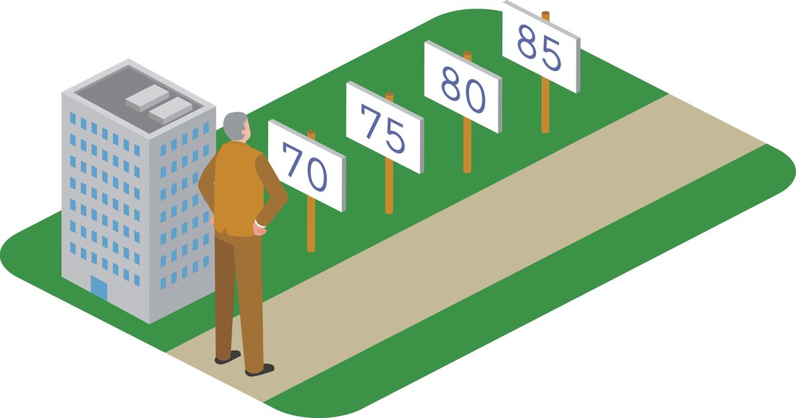

Может ли GLP-1 медленно стареть?
Новое исследование, представленное производителями лекарств, говорит, что да.
Сообщение Can GLP-1s Slow Aging?
впервые появилось на Nautilus.

Новое исследование, представленное производителями лекарств, говорит, что да.
Сообщение Can GLP-1s Slow Aging?
впервые появилось на Nautilus.